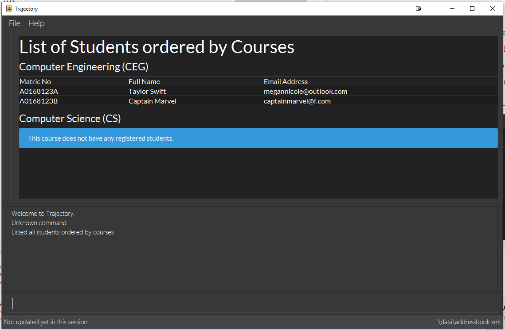

By: T16-1 Since: Aug 2018 Licence: MIT
- 1. Introduction
- 2. Quick Start
- 3. Features
- 3.1. Viewing help :
help - 3.2. Student and Course Management
- 3.2.1. Add Student :
student add - 3.2.2. Update Student :
student edit - 3.2.3. Remove Student :
student delete - 3.2.4. List Students :
student list - 3.2.5. Export Student :
student export [coming in v1.4] - 3.2.6. Add a course :
course add - 3.2.7. List all courses :
course list - 3.2.8. List all courses :
course liststudents - 3.2.9. Remove course :
course delete
- 3.2.1. Add Student :
- 3.3. Module Management
- 3.3.1. Add Module :
module add - 3.3.2. Update module :
module edit - 3.3.3. Remove module :
module delete - 3.3.4. View module details:
module view - 3.3.5. Find module :
module find - 3.3.6. List modules :
module list - 3.3.7. Enrol Student :
module enrol - 3.3.8. Archive module :
module archive [coming in v1.4] - 3.3.9. Assign TA :
module assign [coming in v2.0]
- 3.3.1. Add Module :
- 3.4. Class Management
- 3.4.1. Add Class :
class add - 3.4.2. Update Class Enrollment Limits :
class edit - 3.4.3. Update Class Attendance List :
class modattendance - 3.4.4. List class :
class list - 3.4.5. Remove class :
class delete - 3.4.6. Assign Student To Class :
class addstudent - 3.4.7. Unassigning Student From Class :
class delstudent - 3.4.8. Accessing class attendance list :
class listattendance - 3.4.9. Marking class attendance list :
class markattend
- 3.4.1. Add Class :
- 3.5. Grade Management
- 3.5.1. Add Grade Component :
gradebook add - 3.5.2. Edit Grade Component :
gradebook edit - 3.5.3. Remove Grade Component :
gradebook delete - 3.5.4. Find Grade Component :
gradebook find - 3.5.5. List Grade Components :
gradebook list - 3.5.6. List Students Grades :
grade list - 3.5.7. Add Student Grade :
grade add - 3.5.8. Display Graph of Student Grades :
grade graph
- 3.5.1. Add Grade Component :
- 3.6. Notes Management
- 3.7. Viewing help :
help - 3.8. Listing entered commands :
history - 3.9. Exiting the program :
exit - 3.10. Saving the data
- 3.11. Encrypting data files
[coming in v2.0]
- 3.1. Viewing help :
- 4. FAQ
- 5. Command Summary
1. Introduction
Trajectory is a lightweight management system for those who need a no-frills solution for managing students, modules and classes. It is built for users who prefer typing (CLI) over GUI interaction. Tempted to make the jump? Head on over to the Section 2, “Quick Start” to get started. Enjoy!
2. Quick Start
-
Ensure you have Java version
9or later installed in your Computer. -
Download the program here. (NOT AVAILABLE AT THIS TIME)
-
Copy the
.jarfile to your desired location. -
Double-click the file to start the app. The GUI should appear in a few seconds.
 -
You may start using the app. Use
helpcommand for a brief listing of all commands. -
Refer to Section 3, “Features” for details of each command.
3. Features
Command Format
-
Words in
UPPER_CASEare the parameters to be supplied by the user e.g. inadd n/NAME,NAMEis a parameter which can be used asadd n/John Doe. -
Items in square brackets are optional e.g
c/MODULE_CODE [p/PREREQUISITES]can be used asc/CS2113 p/CS2040Cor asc/CS2113. -
Items with
… after them can be used multiple times including zero times e.g.[p/PREREQUISITES]…can be used asp/CS2040C,p/CS2040C p/CS1010etc. -
Parameters can be in any order e.g. if the command specifies
n/NAME e/EMAIL,e/EMAIL n/NAMEis also acceptable.
3.1. Viewing help : help
Format: help
3.2. Student and Course Management
3.2.1. Add Student : student add
Adds a student to the system.
Format: student add n/NAME i/ADMIN_NUMBER c/COURSE_CODE p/MOBILE_NUMBER e/EMAIL a/ADDRESS
Examples:
-
student add n/Tristy i/A0169999Z c/CS p/90002334 e/E0111342@u.nus.edu a/522 Tampines North 1 -
student add n/Megan Nicole c/CEG e/E0169113@u.nus.edu a/14 Changi South i/A0177897E p/92667921
3.2.2. Update Student : student edit
Edits an existing student in the system.
Format: student edit INDEX [n/NAME] [i/ADMIN_NUMBER] [c/COURSE_CODE] [p/MOBILE_NUMBER] [e/EMAIL a/ADDRESS]
Examples:
-
student edit 1 p/99887890 a/14 Simei Avenue 1Edits the phone number and home address of the 1st student to be 99887890 and 14 Simei Avenue 1 respectively. -
student edit 2 a/14 Jurong East Street 91Edits only the address of the 2nd student to be 14 Jurong East Street 91.
3.2.3. Remove Student : student delete
Deletes the specified student from the system.
Format: student delete INDEX
Examples:
-
student delete 2Deletes the 2nd person in the system
3.2.4. List Students : student list
Shows a list of all students in the system.
Format: student list
3.2.5. Export Student : student export [coming in v1.4]
Exports students to a .csv file
Format: student export LOCATION
Examples:
-
student export C:\exportExports all students in .csv format to the 'export' folder in C drive.
3.2.6. Add a course : course add
Adds a student to the system.
Format: course_add n/COURSE_NAME c/COURSE_CODE f/FACULTY_NAME
Examples:
-
course add n/Computer Engineering c/CEG f/School of Computing -
course add n/Computer Science c/CS f/School of Computing
3.2.7. List all courses : course list
Shows a list of all courses in the system.
Format: course list
3.2.8. List all courses : course liststudents
Shows a list of all students ordered by course.
Format: course liststudent
3.2.9. Remove course : course delete
Deletes the specified course from the system
Format: course delete c/COURSE_CODE
Examples:
-
course delete CEGDeletes CEG from the course directory, if it exists.
3.3. Module Management
3.3.1. Add Module : module add
Adds a module to the system.
Format: module add mc/MODULE_CODE mn/MODULE_NAME
Examples:
-
module add mc/CG1111 mn/EPP1 -
module add mc/CS2113 mn/Software Engineering
3.3.2. Update module : module edit
Edits an existing module in the system.
Format: module edit mc/MODULE_CODE mn/MODULE_NAME
Example:
-
module edit mc/CG1111 mn/Engineering Principles and Practices 1
Edits the module name toEngineering Principles and Practices 1.
3.3.3. Remove module : module delete
Deletes a module from the system.
Format: module delete mc/MODULE_CODE
Example:
-
module delete mc/CS2113
Deletes the module with module codeCS2113
3.3.4. View module details: module view
Displays the details of a module in the system.
Format: module view mc/MODULE_CODE
Example:
* module view mc/CS2113
Displays the details of CS2113 including the list of enrolled students.
3.3.5. Find module : module find
Finds modules whose module code or module name contain any of the given keywords. This is useful for checking if certain module exists in the system.
Format: module find KEYWORD [MORE_KEYWORDS]
Examples:
-
module find cs2113
ReturnsCS2113. -
module find cs2113 CS2040c
ReturnsCS2113andCS2040C.
3.3.6. List modules : module list
Shows a list of all modules in the system.
Format: module list
3.3.7. Enrol Student : module enrol
Enrols students into the specified module using their matriculation numbers or email addresses.
Format: module enrol mc/MODULE_CODE i/MATRIC_NUMBER…
Examples:
-
module enrol mc/CS2113 i/A0161234B
Enrols a student with matric no.A0161234BinCS2113. -
module enrol mc/CS2040C i/A0167263X i/A0179821B
Enrols two students with matric no.A0167263XandA0179821BinCS2040C.
3.3.8. Archive module : module archive [coming in v1.4]
Archives a module that is no longer being taught to keep it as a historical record.
Format: module archive mc/MODULE_CODE
Example:
-
module archive mc/CS2113
Archives the module with module codeCS2113.
3.3.9. Assign TA : module assign [coming in v2.0]
Assigns a student as a TA of the module.
Format: module assign mc/MODULE_CODE [i/MATRIC_NUMBER] [e/EMAIL]
Examples:
-
module assign mc/CS2113 i/A0171234B
Assigns the student with matric no.A0171234Bas a TA. -
module assign mc/CS2113 e/e0191234@u.nus.edu
Assigns the student with emaile0191234@u.nus.eduas a TA.
3.4. Class Management
3.4.1. Add Class : class add
Creates a class and assigns it to a module for the system.
Format: class add cn/CLASS_NAME mc/MODULE_CODE e/MAX_ENROLLMENT
Examples:
-
class add cn/T16 mc/CG1111 e/20
Creates a class T16, assigns it to the module CG1111 with the max enrollment size of 20
3.4.2. Update Class Enrollment Limits : class edit
Modifies the max enrollment size for a class for the system.
Format: class edit cn/CLASS_NAME mc/MODULE_CODE e/ENROLLMENT_SIZE
Examples:
-
class edit cn/T16 mc/CG1111 e/69
Modifies the new max class enrollment size for the class T16 of module CG1111 to be 69
3.4.3. Update Class Attendance List : class modattendance
Modifies the class attendance list for the system.
Format: class modattendance cn/CLASS_NAME mc/MODULE_CODE i/MATRIC_NO
Examples:
-
class modattendance cn/T16 mc/CG1111 i/A6942069M
Modifies the attendance of the student of the admission number A6942069M for the class T16 of module CG1111 to be absent
3.4.4. List class : class list
Lists class(es) with information of the class as well as students assigned to class (if any) for the system.
Format: class list
Examples:
-
class list
Lists all the class(es) created as well as students assigned to class (if any).
3.4.5. Remove class : class delete
Deletes a class for a module in the system.
Format: class delete cn/CLASS_NAME mc/MODULE_CODE
Examples:
-
class delete cn/CLASS_NAME mc/MODULE_CODE
Deletes the class T16 from the module CG1111
3.4.6. Assign Student To Class : class addstudent
Assigns a student to a class in the system.
Format: class addstudent cn/CLASS_NAME mc/MODULE_CODE i/MATRIC_NO
Examples:
-
class addstudent cn/T16 mc/CG1111 i/A6942069M
Adds a student of the admission number A6942069M to the class T16 of module CG1111
3.4.7. Unassigning Student From Class : class delstudent
Unassigns a student from the class in the system.
Format: class delstudent c/CLASS_NAME i/ADMISSION_NO
Examples:
-
class delstudent cn/T16 mc/CG1111 i/A6942069M
Removes a student of the admission number A6942069M from the class T16 of module CG1111
3.4.8. Accessing class attendance list : class listattendance
Access the class attendance list for the system.
Format: class listattendance cn/T16 mc/CG1111
Examples:
-
class listattendance cn/T16 mc/CG1111
Displays the class attendance list for the class T16 for the module CG1111
3.4.9. Marking class attendance list : class markattend
Mark the class attendance list for a specified student for the system.
Format: class markattendance cn/CLASS_NAME mc/MODULE_CODE i/MATRIC_NO
Examples:
-
class markattendance cn/T16 mc/CG1111 i/A6942069M
Marks the attendance of the student of the admission number A6942069M for the class T16 for the module CG1111
3.5. Grade Management
3.5.1. Add Grade Component : gradebook add
Creates a grade item to a module code.
Format: gradebook add mc/MODULE_CODE cn/COMPONENT_NAME [mm/MAX_MARKS] [w/WEIGHTAGE]
Examples:
-
gradebook add mc/CS2113 cn/Assignment 1 mm/60
Adds gradebook component, Assignment 1 with maximum marks of 60, to module CS2040C.
3.5.2. Edit Grade Component : gradebook edit
Edits a grade item.
Format: gradebook edit mc/MODULE_CODE cn/COMPONENT_NAME [ei/EDITED_COMPONENT_NAME] [mm/EDITED_MAX_MARKS] [w/EDITED_WEIGHTAGE]
Examples:
-
gradebook edit mc/CS2113 cn/Assignment 1 en/Finals
Updated component name for CS2040C Assignment 1 to Finals. -
gradebook edit mc/CS2113 cn/Assignment 1 mm/60 w/50
Updated maximum marks and weightage of Assignment 1 in CS2113 to 60 and 50% respectively.
3.5.3. Remove Grade Component : gradebook delete
Removes a grade item to a module code.
Format: gradebook delete mc/MODULE_CODE cn/COMPONENT_NAME
Examples:
-
gradebook delete mc/CS2113 cn/Assignment 1
Deletes Assignment 1 from module CS2113.
3.5.4. Find Grade Component : gradebook find
Finds gradebook component.
Format: gradebook find mc/MODULE_CODE cn/COMPONENT_NAME
Examples:
-
gradebook find mc/CS2113 cn/Assignment 1
Finds Assignment 1 to module CS2113.
3.5.5. List Grade Components : gradebook list
Lists all the grade items in a certain module.
Format: gradebook list
Examples:
-
gradebook list
Lists all the grade items found in Trajectory.
3.5.6. List Students Grades : grade list
Lists grades of all students enrolled in all modules.
Format: grade list
Examples:
-
grade list
Lists all students grades recorded in Trajectory.
3.5.7. Add Student Grade : grade add
Assigns marks to a student.
Format: grade add mc/MODULE_CODE cn/COMPONENT_NAME i/MATRIC_NO m/MARKS
Examples:
-
grade add mc/CS2113 cn/Assignment 1 i/A0167789S m/50
Assigns 50 marks to CS2113 student with matric number A0167789S for Assignment 1.
3.5.8. Display Graph of Student Grades : grade graph
Displays graph of all students of one grade component of an existing module.
Format: grade graph mc/MODULE_CODE cn/COMPONENT_NAME
Examples:
-
grade graph mc/CS2113 cn/Finals
Displays graph which shows result of 'Finals' grade component of all CS2113 students.
3.6. Notes Management
3.6.1. Add Note : note add
Adds a note to a module.
Format: note add mc/MODULE_CODE [tt/TITLE] [sd/START_DATE] [st/START_TIME] [ed/END_DATE] [et/END_TIME] [lc/LOCATION]
-
The START_DATE and END_DATE parameters allows the following date formats only.
-
d-M-yyyy (e.g. 2-11-2018)
-
d/M-yyyy (e.g. 2/11/2018)
-
d.M.yyyy (e.g. 2.11.2018)
-
d-MMM-yyyy (e.g. 2-Nov-2018)
-
d MMM yyyy (e.g. 2 Nov 2018)
-
d-MMM-yy (e.g. 2-Nov-18)
-
d MMM yy (e.g. 2 Nov 18)
-
-
The START_TIME and END_TIME parameters follows the following time format only.
-
h:m AM/PM (e.g. 4:00 PM)
-
- MODULE_CODE strictly follows the following:Module code should begin with 2 or 3 uppercase letters, followed by a 4-digit number and an optional uppercase letter at the end.- The date and time fields are case-insensitive which means the user can enter 2-nOv-2018 as date.- If dates are specified but not the time, the system defines a default time of 12:00 AM for START_DATE and 11:59 PM for END_DATE.- Specifying an END_DATE or any time parameters requires the START_DATE to be defined. Otherwise, the system will inform the user.- The TITLE and LOCATION parameters allows characters up to 30 and 80 maximum respectively. Otherwise, an error message will be displayed. - Omitting the TITLE will show a "(No title)" when the note is displayed. - Defining the START_DATE but not the END_DATE automatically assigns the same date to it.- Entering a START_DATE and START_TIME later than END_DATE and END_TIME is not allowed.- Specifying the prefix but with an empty field is not allowed. (e.g. tt/ ) |
Examples:
-
note add mc/CS2113
This tells the system that the note is to be saved in the CS2113 module with no date. -
note add mc/CS2113 tt/Lecture sd/2.11.2018 st/4:00 PM et/6:00 pm lc/LT15
This tells the system that the note is to be saved in the CS2113 module with a title named "Lecture", a start date (2 Nov 2018) and end date (2 Nov 2018) from 4PM to 6PM at LT15.
3.6.2. Edit note : note edit
Edits an existing note.
Format: note edit INDEX [mc/NEW_MODULE_CODE] [sd/NEW_START_DATE] [st/NEW_START_TIME] [ed/NEW_END_DATE] [et/NEW_END_TIME] [lc/NEW_LOCATION]
-
Edits the note with the specified INDEX.
-
The INDEX refers to the corresponding number of each note when
note listcommand is invoked. -
Upon entering the
note editcommand, the system will prompt the user to type his/her modifications to the note. -
The user can complete his/her edits by pressing
CTRL+S. -
The user can choose to cancel anytime during the editing stage with
CTRL+Q.
| The system does not allow calling this command when the notes list is not displayed. This is to prevent accidentally editing another note. |
Examples:
-
note list mc/CS1010
A list of all notes saved in CS1010 module is displayed.
note edit 3 tt/Changed the title lc/NUS
The user will now be able to edit the note that corresponds to INDEX=3 in the list. The modified note will be saved with its attributes changed accordingly.
3.6.3. Delete note : note delete
Delete notes.
Format: note delete INDEX [MORE_INDEXES]..
-
Delete notes with the specified INDEX.
-
The command allows for multiple deletion by entering multiple INDEXES separated by space.
-
The INDEX refers to the corresponding number of each note when
note listcommand is invoked.
Examples:
-
note list mc/CS2040C
A list of all notes saved in CS2040C module is displayed.
note delete 2 1
Delete notes that corresponds to INDEX=1 and INDEX=2 from the list.
3.6.4. Find note : note find
Search and display existing notes using keywords.
Format: note find k/KEYWORD [k/MORE_KEYWORDS]..
-
The command searches for notes that contains ALL keywords.
-
It only matches with
TITLEand the note’stext content. -
Multiple keywords can be accepted.
-
A minimum of one keyword is required for the command to work.
-
Keywords are case-insensitive.
-
Each keyword must consist only of a single word (e.g. "Sort", "Git-Hub") and is not separated by spaces.
Examples:
-
note find k/git k/OOP
Lists all notes which contain both keywords "git" and "OOP".
3.6.5. List notes : note list
Shows a list of all saved notes.
Format: note list [mc/MODULE_CODE]
-
MODULE_CODEfield is case-insensitive, hence the user can use either lowercase or uppercase.
Examples:
-
note list
This will list all existing notes from Trajectory. -
note list mc/CS1231
This will list all notes saved in CS1231 module.
3.6.6. Export notes: note export
Converts all exportable notes to CSV.
Format: note export fn/FILE_NAME
-
This command creates a <FILE_NAME>.csv file in the user directory.
-
Directory: C:\Users\<UserName>\<FILE_NAME>.csv
-
The format follows the Google Calendar’s CSV import formatting. Hence, the user can import their notes to Google Calendar with this command.
-
Only notes with dates are exportable.
3.7. Viewing help : help
Shows the help page
Format: help
3.8. Listing entered commands : history
Lists all the commands that you have entered in reverse chronological order.
Format: history
|
Pressing the ↑ and ↓ arrows will display the previous and next input respectively in the command box. |
3.9. Exiting the program : exit
Exits the program.
Format: exit
3.10. Saving the data
Address book data are saved in the hard disk automatically after any command that changes the data.
There is no need to save manually.
3.11. Encrypting data files [coming in v2.0]
{explain how the user can enable/disable data encryption}
4. FAQ
Q: How do I transfer my data to another Computer?
A: Install the app in the other computer and overwrite the empty data file it creates with the file that contains the data of your previous Address Book folder.
5. Command Summary
-
Add course :
course add c/COURSE_CODE n/COURSE_NAME f/FACULTY_NAME
e.g.course add c/CEG n/Computer Engineering f/FoE -
Delete course :
course delete c/COURSE_CODE
e.g.course delete c/CEG -
List all courses :
course list -
List all students ordered by courses :
course liststudents -
Add student :
student add n/NAME i/ADMIN_NUMBER c/COURSE_CODE p/MOBILE_NUMBER e/EMAIL a/ADDRESS
e.g.student add n/Megan Nicole c/CEG e/E0169113@u.nus.edu a/14 Changi South i/A0177897E p/92667921 -
Update student :
student edit INDEX [n/NAME] [i/ADMIN_NUMBER] [c/CLASS] [p/MOBILE_NUMBER] [e/EMAIL a/ADDRESS] `
e.g. `student edit 1 p/99887890 a/14 Simei Avenue 1 -
Finding a student by name/matric no :
student find [n/STUDENT_NAME] [i/MATRIC_NO
e.g.student find Megan Nicole -
List all students :
student list -
Delete student by INDEX :
student delete
e.g.student delete 2 -
Export students [COMING IN V1.4] :
student export
e.g.student export C:\export -
Add module :
module add mc/MODULE_CODE mn/MODULE_NAME
e.g.module add mc/CS2113 mn/Software Engineering -
Update module :
module edit mc/MODULE_CODE mn/MODULE_NAME
e.g.module edit mc/CS2113 mn/Software -
Remove module :
module delete mc/MODULE_CODE
e.g.module delete mc/CS2113 -
View module details :
module view mc/MODULE_CODE
e.g.module view mc/CS2113 -
Find module by module code :
module find KEYWORD [MORE_KEYWORDS]
e.g.module find cs2113 structures -
List modules :
module list -
Enrol student in module :
module enrol mc/MODULE_CODE i/MATRIC_NUMBER…
e.g.module enrol mc/CS2113 i/A0167263X i/A0179821B -
Archive module :
module archive mc/MODULE_CODE[coming in v1.4]
e.g.module archive mc/CS2113 -
Assign TA :
module assign mc/MODULE_CODE [i/MATRIC_NUMBER] [e/EMAIL][coming in v2.0]
e.g.module assign mc/CS2113 i/A0171234B -
Add Grade Component :
gradebook add mc/MODULE_CODE cn/COMPONENT_NAME [mm/MAX_MARKS] [w/WEIGHTAGE]
e.g.gradebook add mc/CS2113 cn/Assignment 1 mm/60 -
Edit Grade Component :
gradebook edit mc/MODULE_CODE cn/COMPONENT_NAME [en/EDITED_COMPONENT_NAME] [mm/EDITED_MAX_MARKS] [w/EDITED_WEIGHTAGE]
e.g.gradebook edit mc/CS2113 cn/Assignment 1 en/Finals -
Delete Grade Component :
gradebook delete mc/MODULE_CODE cn/COMPONENT_NAME
e.g.gradebook delete mc/CS2113 cn/Assignment 1 -
List Grade Components :
gradebook list
e.g.gradebook list -
Find Grade Components :
gradebook find mc/MODULE_CODE cn/COMPONENT_NAME
e.g.gradebook find mc/CS2113 cn/Assignment 1 -
List Students Grades :
grade list
e.g.grade list -
Add Student Grade :
grade add mc/MODULE_CODE cn/COMPONENT_NAME i/MATRIC_NO m/MARKS
e.g.grade add mc/CS2113 cn/Assignment 1 i/A0167789S m/50 -
Display Graph of Student Grades :
grade graph mc/MODULE_CODE cn/COMPONENT_NAME
e.g.grade graph mc/CS2113 cn/Finals -
Creating a class
class add cn/CLASS_NAME mc/MODULE_CODE e/ENROLLMENT_SIZE
e.g.class add cn/T16 mc/CG1111 e/20 -
List class
class list
e.g.class list -
Deleting a class
class delete cn/CLASS_NAME mc/MODULE_CODE
e.g.class delete cn/T16 mc/CG1111 -
Assigning a student to class
class addstudent cn/CLASS_NAME mc/MODULE_CODE i/MATRIC_NO
e.g.class addstudent cn/T16 mc/CG1111 i/A6942069M -
Unassigning a student from class
class delstudent cn/CLASS_NAME mc/MODULE_CODE i/MATRIC_NO
e.g.class delstudent cn/T16 mc/CG1111 i/A6942069M -
Modifying class enrollment limits
class edit cn/CLASS_NAME mc/MODULE_CODE e/ENROLLMENT_SIZE
e.g.class edit cn/T16 mc/CG1111 e/69 -
Accessing class attendance list
class listattendance cn/CLASS_NAME mc/MODULE_CODE
e.g.class listattendance cn/T16 mc/CG1111 -
Marking class attendance list
class markattendance cn/CLASS_NAME mc/MODULE_CODE i/MATRIC_NO
e.g.class markattendance cn/T16 mc/CG1111 i/A6942069M -
Modifying class attendance list
class modattendance cn/CLASS_NAME mc/MODULE_CODE i/MATRIC_NO
e.g.class modattendance cn/T16 mc/CG1111 i/A6942069M -
Add a note
note add mc/MODULE_CODE [sd/START_DATE] [st/START_TIME] [ed/END_DATE] [et/END_TIME] [lc/LOCATION]
e.g.note add mc/CS2040C -
List notes
note list [mc/MODULE_CODE]
e.g.note list mc/CS2040C -
Delete a note
note delete INDEX
e.g.note delete 8 -
Edit a note
note edit INDEX [mc/NEW_MODULE_CODE] [sd/NEW_START_DATE] [st/NEW_START_TIME] [ed/NEW_END_DATE] [et/NEW_END_TIME] [lc/NEW_LOCATION]
e.g.note edit 5 mc/CS2040C -
Find a note
note find k/KEYWORD [k/MORE_KEYWORDS]..
e.g.note find k/bubble k/queue -
Export notes
note export fn/FILE_NAME
e.g.note export fn/notes -
History :
history